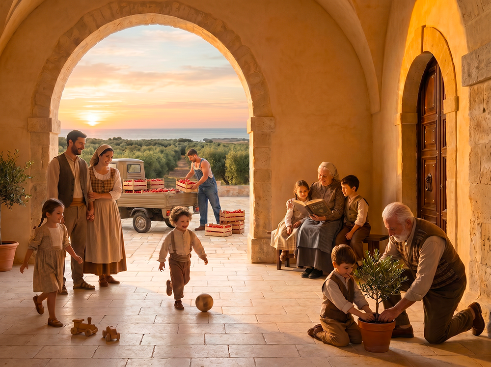
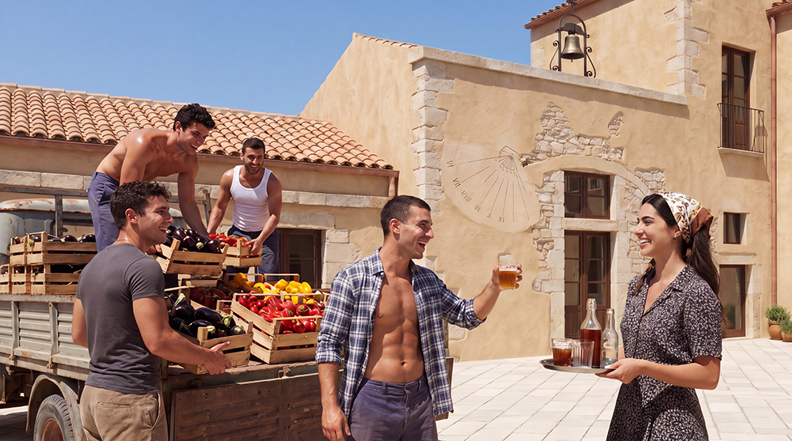

Vivere al Baglio San Michele significa scegliere un ritmo più umano, consapevole e radicato. Non si tratta solo di abitare in un luogo bello, ma di entrare a far parte di una comunità intenzionale che mette al centro le relazioni, la cura reciproca e la trasmissione di valori alle nuove generazioni.

Genitori che desiderano un contesto educativo ricco di valori, natura e ritmi più regolari, lontano dallo stress delle grandi città.

Chi desidera apprendere o trasmettere mestieri tradizionali e contribuire attivamente alla vita produttiva della comunità.

Persone che cercano una base stabile, immersa nella natura e nelle relazioni autentiche, senza rinunciare alla qualità del lavoro.

Persone che cercano dignità, utilità sociale e vicinanza a una comunità che valorizza il ruolo degli anziani.

Un ambiente in cui i bambini possano crescere con adulti di riferimento, a contatto con la natura e con ritmi più umani.

Una comunità piccola in cui le persone si conoscono realmente e si aiutano nel quotidiano.

Un contesto prevedibile e protetto, dove le relazioni sono durature e basate sulla fiducia reciproca.

La possibilità di vivere e trasmettere fede, responsabilità e radicamento territoriale alle nuove generazioni.